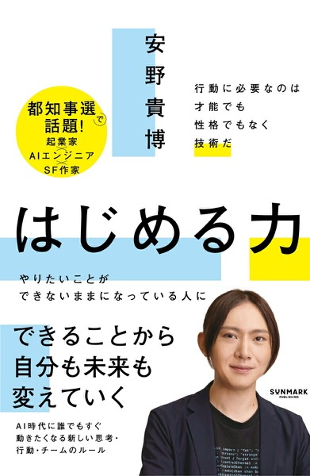
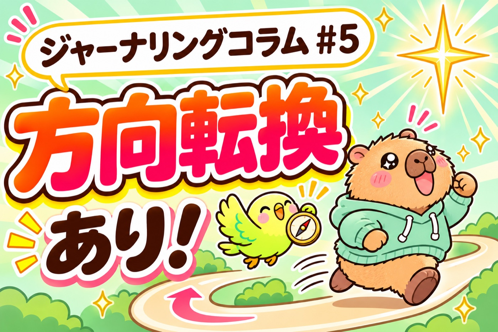
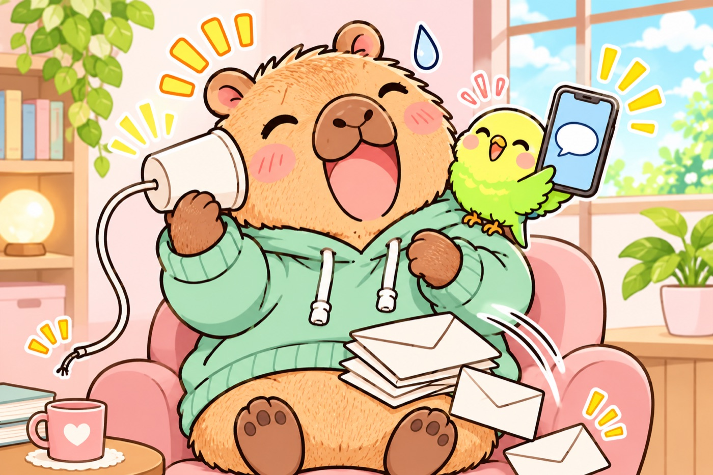
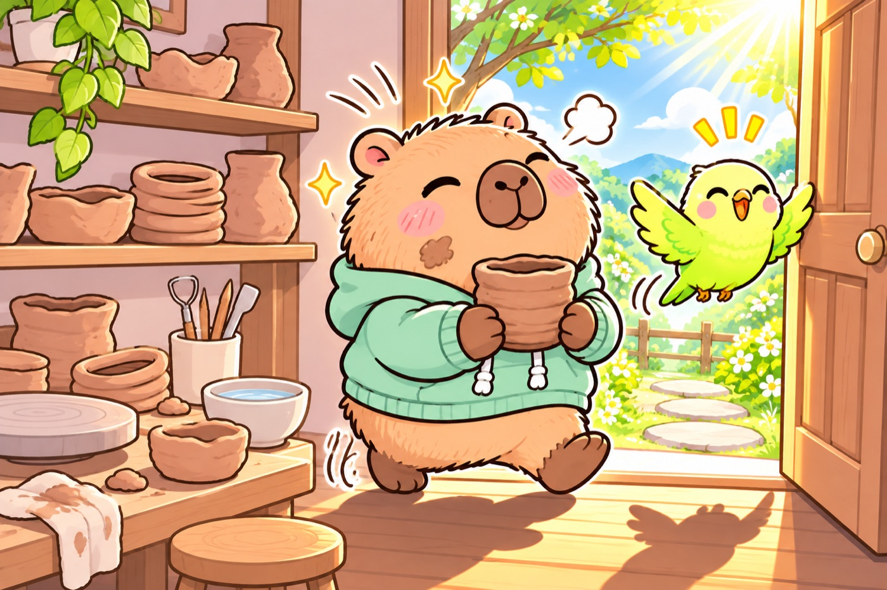
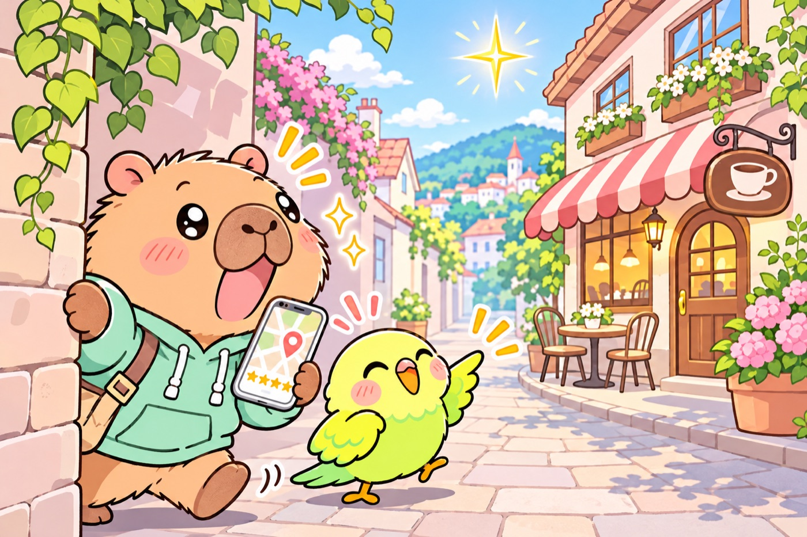
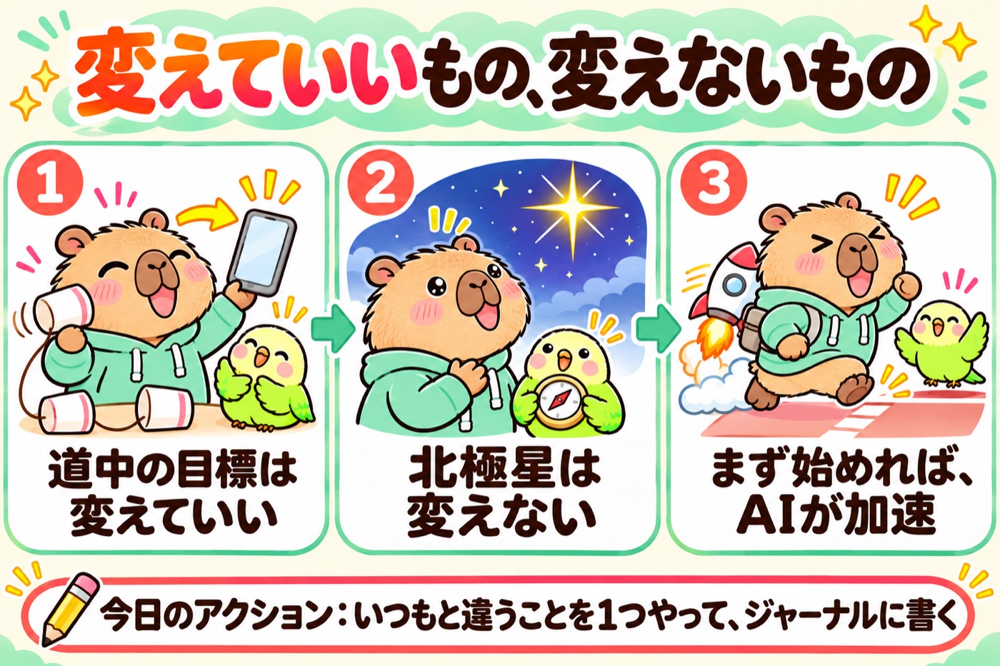

はじめる力
はじめる力
安野貴博サンマーク出版（2025年）
6月に読んで、「変化筋力」「始める筋力」という言葉をメモした、大好きな本です🦫

朝起きて、まず録った声をお届けします。見ても聴いても、どっちでもどうぞ😊
♪ BGM：Morning／しゃろう
そんな方、いませんか？
はい、まさに私です🤣
みなさん、おはようございます〜！
ストレングスファインダー認定コーチのおけもんです🦫
ただいま11月25日の朝6時50分ごろ。みなさんはいつも何時ぐらいに起きますか？
私はむっちゃ朝型というわけでもないんですが、「朝起きたら、まずこれを録る！」を日課にしてみたくて、今日も喋っています😊
今は走り出したところで楽しいから続いていますが、いつまで続くのか……みなさん、生温かく見守っていただけたらうれしいです🤣
今日のテーマは、昨日AIが設定してくれた「書いた目標は、途中で変わっても大丈夫」です。
正直に言うと、私、目標を立てるのが本当に苦手なんです。
稼ぎ屋祭りで自己最高の月収を目標にする、みたいな時でも、なかなか立てた目標に向かっていけなくて。
自分との約束を守れないと、自己肯定感も下がって、自分のことが嫌いになったりもしますよね。
だから今日は、ある意味「自分への慰めのコラム」かもしれません😂 「わかるわ〜」という方もいれば、「私はちょっと違うな」と思う方もいて当然。いろんな意見が飛び交って、それぞれの気づきが生まれたらいいなと思っています😊
目標は変わってもいい、というテーマで私がお伝えしたいのは、「変わってもいいもの」と「変わってはいけないもの」があるということです。
変わってもいいのは、道中の目標ややり方。
たとえば学長のおすすめ副業も、今やたくさんありますよね。でも、5年前の副業と今の副業って、AIが出てきてから全然違います。学長がClaude Codeの話をし始めたのも、今年に入ってからですよね😳
昔に立てたやり方にずっとこだわり続けるのは、たとえるなら「人と話す時は、毎回糸電話か、お手紙を出しに行かなきゃいけない」という目標を立て続けるようなもの。
今はスマホもチャットもあります。やり方が変わっているのに、その目標をずっと持ち続けないといけない理由って、本当にあるのかな？と思うんです。

自分の行きたい場所にさえたどり着けるなら、道中のゴールや行き方は変わってもいい。
というか、私は飽きっぽいので、そう思わないとそもそも進めないんです😂
このジャーナリングも、「続けること」はやりたいなと思いつつ、最初はチャットに書いてリベッターにも投稿していたのが、やっぱり飽きてきて🤣
じゃあ次はどうしよう？ と、今はこうして音声で喋ったり、コラムにしたりする形に変えています。
私は自分の人生で、こう決めています。
昨日の「決めれば、叶う。」じゃないですけどね🤣
世の中で言われていることの真逆なので、離れていく方もいるかもしれません。でも、それで自分を嫌いになるよりは、そんな特性も「まあいいか」と受け入れて、「それでもいいよ」と思ってくれる人たちと、そして自分自身と、仲良くなれたらいいなと思っています😊
ここで、私が大好きな本を1冊。
チームみらいの安野貴博さんの『はじめる力』です。
この本で語られているのが、これからの時代は「ずっと同じことをやり続ける力」よりも、「まず始めて、そこから方向転換していく力」が大事だということ。
副業や事業なんて一発では当たらないもので、何回も、何十回もやって、それで一発当たったらいい。しかも今は、始めてさえしまえば、AIがスタートダッシュを加速してくれるんですよね😳
たとえば、私のこの音声配信もそうです。
みなさんのところには綺麗に届いているかもしれませんが、実は喋りながら「えーと」「あー」「うーん、ここどうやろうな」と結構悩んでいます🤣 それでも、とりあえず喋ってしまえば、あとはAIがうまいことカットして繋いでくれる。音声さえ録ってしまえば、今はリベの中のコラムだけですが、noteや他のSNSにも繋げられるかもしれません。
安野さんご自身は「石橋を叩いて渡るタイプ」なんだそうです。とてもそうは見えないんですが🤣
それでも、AIがぶわっと広がる前にM-1にロボットと組んで出てみたり、選挙に出てみたり。もともと得意じゃないからこそ、少しずつ「始める筋」「変化筋」を鍛えて、今の時代を軽やかに生きているんだろうなと感じます。
……と、ここまで軽やかに語ってきましたが、私だってポンポン進めるタイプじゃないんです🤣
私はストレングスファインダーの「最上志向」という資質を持っています。良いものをもっと良くしたい、という資質です（ストレングスファインダーの話は、おいおいコラムでもお話ししますね！）。
成長していくのが面白いところでもあるんですが、裏を返すと「綺麗に、完璧にしないと出してはいけない」と、アウトプットが遅くなりがちで。
ノウハウ図書館の記事なんて、最後の「。」ひとつの置き方や、画像ひとつの配置が気になりだしたら、もう進まないんです😂
そうやって、みなさんの目に触れないまま、家の中に作りかけの壺がいっぱい転がっています。

だからこそ、私自身も「まず始めてみる」がすごく大事だなと思うんです。
昔は、本を出すとか、一度出したら取り返しがつかないものもありました。でも今は、ノウハウ図書館の記事も一回ポンと出してから書き換えられるし、SNSもだいたいのものは消したり書き換えたりできる。ありがたい時代です🙌
メッセージの返信も滞りがちな私は、最近はAIにバーッと下書きを書いてもらって、とりあえず送ってから「あ、ごめんなさい、ごめんなさい！」と中身を直すことも多いです🤣 もし「おけもんのメッセージ、なんかおかしいぞ？」と思ったら、そういうことです😂
細かく細かく考えて止まるより、1回やってから「ごめんなさい」するほうが、今の私には合っています。
じゃあ逆に、変えてはいけないものは何か。
それは、みなさんの「北極星」です。
私にとっての北極星は、「ワクワクに沿って生きる」「正しいより楽しい」。ここは自分の人生のセンターピンなので、今はそれに沿って生きることを大切にしています。
北極星に沿って生きながら、道中の目標や過程は、しなやかに変えていく。そのための「変化筋」が、これからすごく大事なんじゃないかなと思います😊
とはいえ、人ってそもそも変化が怖い生き物なんですよね。ホメオスタシスなんて言ったりします。
ブラック労働をなかなか辞められないのも、ブラック労働そのものが新しいことを始める力を奪ってしまう面もありつつ、「今なんとか働けてるし、お給料ももらえてる。ほかのところで働けるかも不安やし……」と、新しい場所へ行くのが怖いから。
それでも、今は明日何が起こるかわからない時代です。昨日の正解が、今日の不正解になるような時代だなと思っています。
（……あ、話があっちゃこっちゃにそれてきましたね🤣 「最初と違うこと言ってない？」と思うかもしれませんが、こういうのも私の特徴なので、「こんなもんやな」とお付き合いいただけたらうれしいです🙌）

6月に読んで、「変化筋力」「始める筋力」という言葉をメモした、大好きな本です🦫
AIエンジニアでSF作家、2024年の東京都知事選にも出た安野貴博さんの本です。最初に書かれているのは、AIとの共存が当たり前になる社会で最も重要なスキルは、物事を新たに「はじめる力」だ、ということ。そして、それは特別な人だけの才能ではなく、身につけられる技術だ、とも書かれています。
本の中では、何かを「はじめる」時の3つのステップが紹介されています👇
録音のあとで本を開き直したら、今日のお話とつながるところが2つありました😳
北極星（コンパス）を持って、道は何度でも引き直す。今日のお話そのものでした🙌
参考にした資料：安野貴博『はじめる力』（サンマーク出版）第1章「コンパス」と「軌道修正」／第2章「数をつくるか、クオリティを高めるか？」
「試しては、変えていく」暮らしを、もっと見てみたい方へ👇
📺 安野貴博さん × 勝間和代さんの対談（2分42秒から） 勝間さんは家電を「買っては試して」、7〜8割はボツ。合うものだけ残していく 👉 タップして動画を見る YouTubeが開きます（安野貴博の自由研究）昨日の「決める力」に続いて、今日は「変化する力」をちょっとだけ育ててみませんか？
大きなところでいえば転職や副業、違うコミュニティに行ってみることも変化ですが、ほんの小さなことで大丈夫です😊

私が最近やっているのは、Googleマップのレビューを書いたり、行ったお店に星をつけたりする恩送り。これだけでも、自分の気持ちがフッと上がります😊
そして今日は、神戸から京都オフィスまで行って、オフ会をしてきます！（先月に続いての京都オフィスです🙌）
こうして小さな変化に慣れていくと、「あ、私って変化の波に乗れる人なんや」「軽やかに生きられる人なんや」と、自分の中のセルフイメージが変わっていくと思います。
「やると決めたから、やらなきゃ」「途中で変えたらダサいな」という思いも、大切にしつつ。
「変わってもいいんじゃない？」「むしろ、変わることがいいんだよ」という考え方も、カバンの中にそっと入れておいてくださいね😊

いや〜、あっちゃこっちゃに話がそれて、気づけば13分も喋っていました🤣
最近ぐっと寒くなってきましたね。みなさん、風邪をひかないように暖かくしてくださいね。健康が一番です！
そして今日でコラムも5日目。
「続いてるおけもん、ちょっと偉い！」と言ってもらえると、めちゃくちゃモチベーションが上がります🤣🙌
コラムにたくさんコメントをいただき、本当にありがとうございます！ チャットの方で、また返信も送らせていただきますね。本当に励みになっています😊
ストレングスファインダー × ジャーナリング。私のど真ん中の領域でお話しします😊 「こんなテーマで話してほしい」「これってどうなん？」という質問やリクエストも大歓迎です！
▶ #6 を読む（公開しました）